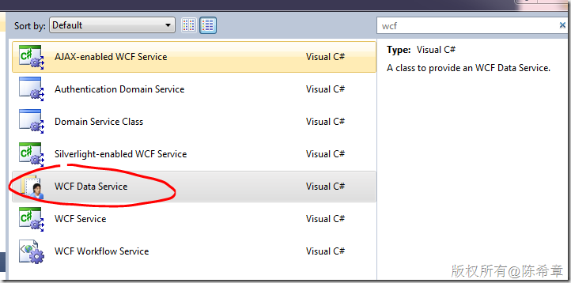
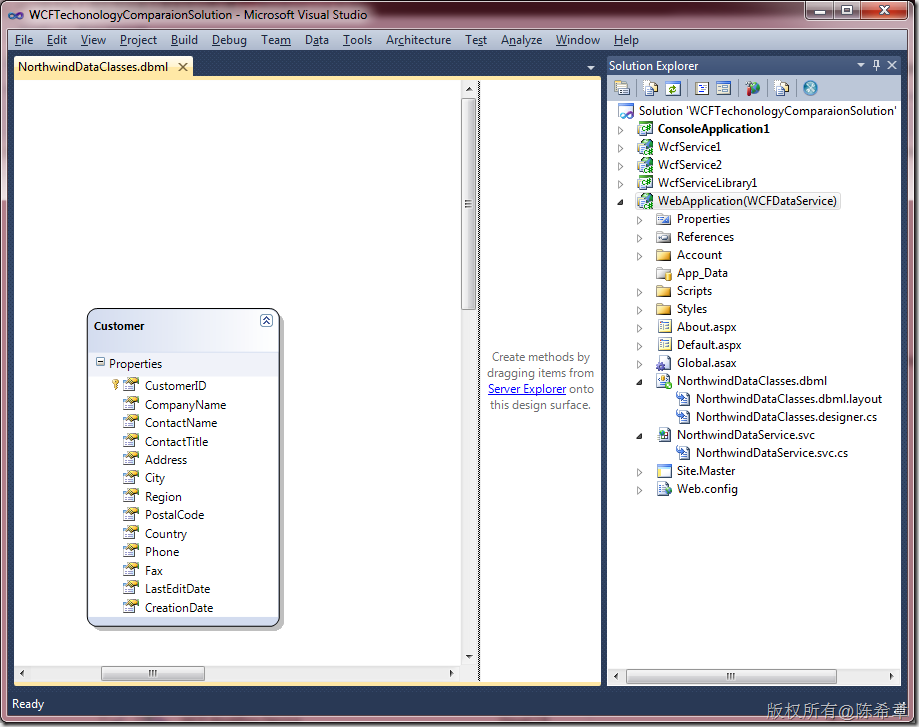
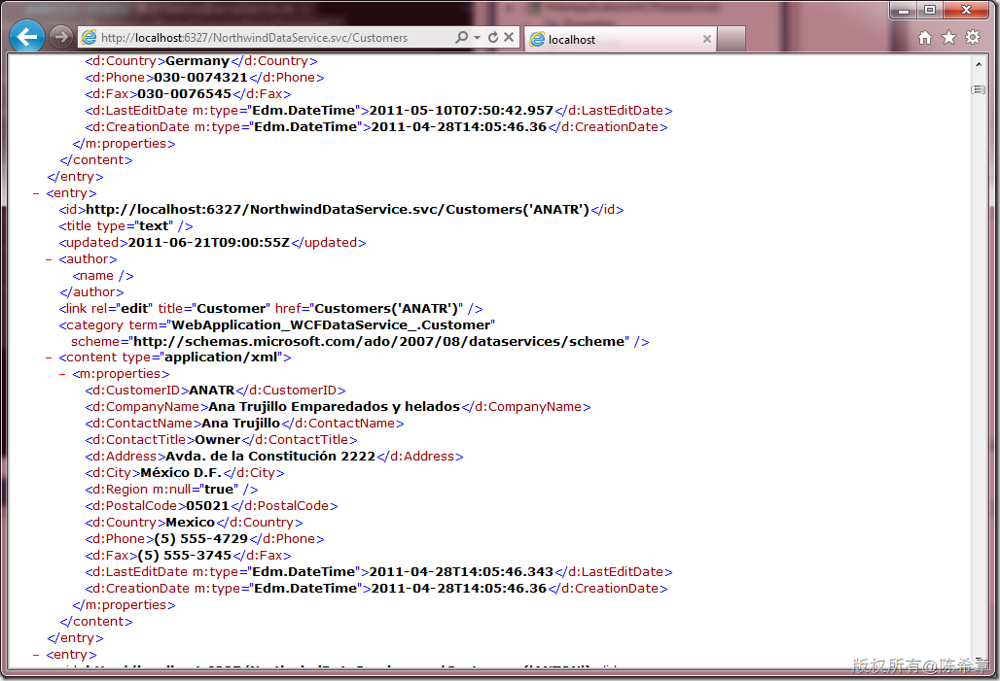
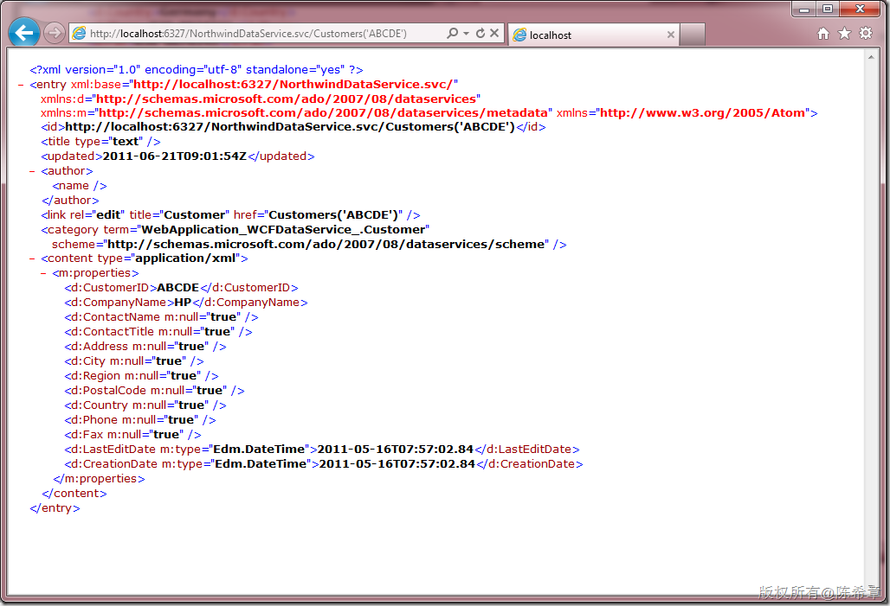
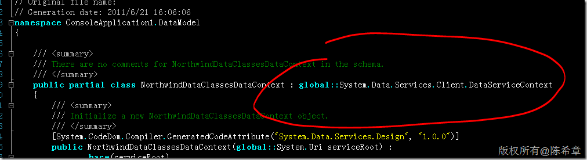
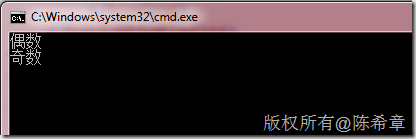

WCF技术的不同应用场景及其实现分析(续）
原文发表于 2011-06-21, 地址: http://www.cnblogs.com/chenxizhang/archive/2011/06/21/2086314.html
上一篇 我总结介绍了WCF技术的背景，核心要素，和典型场景，目的是希望让大家更好地掌握WCF技术，并且在工作中知道如何选择。
由于篇幅较长，这一篇继续写完第二部分。
应用场景：
WCF 从发布到现在的将近5年左右的时间，经过了多次增强和改进，从最开始单纯的SOAP Service的方式，发展出来其他多种应用场景，分别是
- SOAP Services 2. WebHttp Services 3. Data Services 4. Workflow Services 5. RIA Services
本文将讨论后面3种应用场景。 3. Data Services
Data Service，顾名思义，是指数据服务。最开始的名称叫做ADO.NET Data Service，是从.NET Framework 3.5 SP1开始提供的功能。在.NET Framework 4.0中，已经改名为WCF Data Service.  这个服务类型是WebHttp Service的一种特殊实现，也就是说，它延续了WebHttp Service的Restful的特点。但与标准的WebHttp Service，不同的是，它具有一套完整的API，包括客户端的访问API。这样也就允许，它既支持类似于Javascript这样的脚本访问，也支持在传统客户端中进行访问。 需要注意的是，WCF Data Service既然是数据服务，它天生就是为数据访问有关。这是它最强的地方，它的出现大大简化了我们编写数据访问服务的工作。好不夸张地说，确实很酷。你可以想象一下，你有一个数据库，有N张表，你想实现对这些表的增删改查操作，如果你一个一个去编写，显然是一件非常辛苦而且没有效率的事情。 WCF Data Service支持两种数据模型，一种是LINQ to SQL, 一种是ADO.NET Entity Frmawork。下面的例子使用了LINQ to SQL. 使用的数据库是微软提供的范例数据库Northwind.  有了上面这个模型之后，我们就可以添加一个WCF Data Service了。这是一个继承子DataService的类型，并且通过svc这种Self Host的方式提供宿主。
using System.Data.Services;
using System.Data.Services.Common;
namespace WebApplication\_WCFDataService\_
{
public class NorthwindDataService : DataService<**NorthwindDataClassesDataContext**>
{
// This method is called only once to initialize service-wide policies.
public static void InitializeService(DataServiceConfiguration config)
{
// TODO: set rules to indicate which entity sets and service operations are visible, updatable, etc.
// Examples:
**config.SetEntitySetAccessRule("*", EntitySetRights.AllRead);**
// config.SetServiceOperationAccessRule("MyServiceOperation", ServiceOperationRights.All);
config.DataServiceBehavior.MaxProtocolVersion = DataServiceProtocolVersion.V2;
}
}
}
.csharpcode, .csharpcode pre { font-size: small; color: black; font-family: consolas, "Courier New", courier, monospace; background-color: #ffffff; /white-space: pre;/ } .csharpcode pre { margin: 0em; } .csharpcode .rem { color: #008000; } .csharpcode .kwrd { color: #0000ff; } .csharpcode .str { color: #006080; } .csharpcode .op { color: #0000c0; } .csharpcode .preproc { color: #cc6633; } .csharpcode .asp { background-color: #ffff00; } .csharpcode .html { color: #800000; } .csharpcode .attr { color: #ff0000; } .csharpcode .alt { background-color: #f4f4f4; width: 100%; margin: 0em; } .csharpcode .lnum { color: #606060; }
这样就完成了所有的操作，在浏览器中可以通过REST的风格测试该服务。例如，下面的语法是查看所有Customers的  下面是查看某个Customer信息的  我们可以看到，默认情况下,WCF服务是用XML返回数据的。关于如何让它返回JSON数据，我之前有一篇文章专门探讨。请参考：http://www.cnblogs.com/chenxizhang/archive/2011/06/12/2078830.html 值得注意的是，与WebHttp Service不同的是，Data Service可以在标准客户端中进行访问。而且它的方式是有些特殊的，具体来说，客户端也是通过一个DataServiceContext的类型来访问的. 例如下面这样（这个文件是我们添加服务引用时自动生成的）  我们可以通过如下这样的代码进行调用
using System;
using System.Linq;
namespace ConsoleApplication1
{
class Program
{
static void Main(string[] args)
{
var ctx = new DataModel.NorthwindDataClassesDataContext(
new Uri("http://localhost.:9475/NorthwindDataService.svc/"));
var query = from c in ctx.Customers
select c;
foreach (var item in query)
{
Console.WriteLine(item.CompanyName);
}
}
}
}
.csharpcode, .csharpcode pre { font-size: small; color: black; font-family: consolas, "Courier New", courier, monospace; background-color: #ffffff; /white-space: pre;/ } .csharpcode pre { margin: 0em; } .csharpcode .rem { color: #008000; } .csharpcode .kwrd { color: #0000ff; } .csharpcode .str { color: #006080; } .csharpcode .op { color: #0000c0; } .csharpcode .preproc { color: #cc6633; } .csharpcode .asp { background-color: #ffff00; } .csharpcode .html { color: #800000; } .csharpcode .attr { color: #ff0000; } .csharpcode .alt { background-color: #f4f4f4; width: 100%; margin: 0em; } .csharpcode .lnum { color: #606060; }
【注意】这里调用的方式，返回的数据是XML格式的，而不是SOAP Envelope的那种方式。
关于Data Service与WebHttp Service的相同之处，还体现在它也可以添加自定义的Operation，例如下面这篇文章介绍的那样
http://www.cnblogs.com/chenxizhang/archive/2010/02/28/1675270.html
常见的问题还有：Data Service如何做身份验证？我之前写过一篇文章介绍这个问题：http://www.cnblogs.com/chenxizhang/archive/2010/02/28/1675307.html
总结：Data Service是一种结合数据模型快速实现数据访问的方式。它依赖LINQ to SQL或者ADO.NET Entity Framework，并且提供了RESTFul的实现（它所使用的绑定就是WebHttpBinding)。它有一套专用的安全模型，与标准的WCF不一样。
4. Workflow Services
这是一个很有意思的服务。这是在.NET Framework 4.0中开始出现的，也就是随着Workflow Foundation升级到4.0之后，提供了一种全新的服务类型，简单地来说，它是可以直接与Workflow Foundation(工作流）想结合的一种服务。
创建好的项目中，包含了一个特殊的文件，叫xamlx。
虽然该文件很怪异，但它在浏览器中打开来看的效果却有标准的WCF服务没有什么区别，如下
不少朋友都不理解为什么需要这样一个服务，我相信正在看这篇文章的你也一定心存疑惑吧？
这是一个WCF服务，但为什么要与Workflow(工作流）扯上关系呢？
答案就是：如果你这个WCF服务，要提供的功能，希望用工作流的方式来设计和实现的话，你就可以用这个服务。
换句话说，这里的重点，仍然是WCF服务，而不是Workflow。Workflow是实现的一种方式。具体来说，在这种方式中，你可以不写任何代码就能实现一些流程功能。
Workflow的讨论显然超出了本文的范畴，这里就不多展开了。
以上面这个服务为例，它是公开了一个方法叫“GetData”，该方法接受一个参数，叫“data”，是整数型的。默认情况下，这个服务会将用户传入的参数data作为响应直接发给调用方。
那么，如何理解工作流设计呢？假设我们希望为该服务添加一个简单逻辑，用户如果传入的data是偶数，则返回“偶数”，否则返回“奇数”这样的文本字符串。我们可以将这个服务稍做修改。如下图所示
大家请注意，实现这个功能，我们并不需要编写代码。
实际上，上面这个服务就是一段XAML的定义。这种做法自有它的好处，但这里不深入讨论了。
<WorkflowService mc:Ignorable="sap" ConfigurationName="Service1" sap:VirtualizedContainerService.HintSize="561,620" Name="Service1" mva:VisualBasic.Settings="Assembly references and imported namespaces serialized as XML namespaces" xmlns="http://schemas.microsoft.com/netfx/2009/xaml/servicemodel" xmlns:mc="http://schemas.openxmlformats.org/markup-compatibility/2006" xmlns:mv="clr-namespace:Microsoft.VisualBasic;assembly=System" xmlns:mva="clr-namespace:Microsoft.VisualBasic.Activities;assembly=System.Activities" xmlns:p="http://tempuri.org/" xmlns:p1="http://schemas.microsoft.com/netfx/2009/xaml/activities" xmlns:s="clr-namespace:System;assembly=mscorlib" xmlns:s1="clr-namespace:System;assembly=System" xmlns:s2="clr-namespace:System;assembly=System.Xml" xmlns:s3="clr-namespace:System;assembly=System.Core" xmlns:s4="clr-namespace:System;assembly=System.ServiceModel" xmlns:sa="clr-namespace:System.Activities;assembly=System.Activities" xmlns:sad="clr-namespace:System.Activities.Debugger;assembly=System.Activities" xmlns:sap="http://schemas.microsoft.com/netfx/2009/xaml/activities/presentation" xmlns:scg="clr-namespace:System.Collections.Generic;assembly=System" xmlns:scg1="clr-namespace:System.Collections.Generic;assembly=System.ServiceModel" xmlns:scg2="clr-namespace:System.Collections.Generic;assembly=System.Core" xmlns:scg3="clr-namespace:System.Collections.Generic;assembly=mscorlib" xmlns:sd="clr-namespace:System.Data;assembly=System.Data" xmlns:sl="clr-namespace:System.Linq;assembly=System.Core" xmlns:st="clr-namespace:System.Text;assembly=mscorlib" xmlns:x="http://schemas.microsoft.com/winfx/2006/xaml">
<p1:Sequence DisplayName="Sequential Service" sad:XamlDebuggerXmlReader.FileName="d:\temp\WCFTechonologyComparaionSolution\DeclarativeServiceLibrary1\Service1.xamlx" sap:VirtualizedContainerService.HintSize="531,590" mva:VisualBasic.Settings="Assembly references and imported namespaces serialized as XML namespaces">
<p1:Sequence.Variables>
<p1:Variable x:TypeArguments="CorrelationHandle" Name="handle" />
<p1:Variable x:TypeArguments="x:Int32" Name="data" />
<p1:Variable x:TypeArguments="x:String" Name="result" />
</p1:Sequence.Variables>
<sap:WorkflowViewStateService.ViewState>
<scg3:Dictionary x:TypeArguments="x:String, x:Object">
<x:Boolean x:Key="IsExpanded">True</x:Boolean>
</scg3:Dictionary>
</sap:WorkflowViewStateService.ViewState>
<Receive x:Name="\_\_ReferenceID0" CanCreateInstance="True" DisplayName="ReceiveRequest" sap:VirtualizedContainerService.HintSize="509,90" OperationName="GetData" ServiceContractName="p:IService">
<Receive.CorrelationInitializers>
<RequestReplyCorrelationInitializer CorrelationHandle="[handle]" />
</Receive.CorrelationInitializers>
<ReceiveMessageContent>
<p1:OutArgument x:TypeArguments="x:Int32">[data]</p1:OutArgument>
</ReceiveMessageContent>
</Receive>
<p1:If Condition="[data Mod 2 = 0]" sap:VirtualizedContainerService.HintSize="509,206">
<p1:If.Then>
<p1:Assign sap:VirtualizedContainerService.HintSize="242,100">
<p1:Assign.To>
<p1:OutArgument x:TypeArguments="x:String">[result]</p1:OutArgument>
</p1:Assign.To>
<p1:Assign.Value>
<p1:InArgument x:TypeArguments="x:String">偶数</p1:InArgument>
</p1:Assign.Value>
</p1:Assign>
</p1:If.Then>
<p1:If.Else>
<p1:Assign sap:VirtualizedContainerService.HintSize="242,100">
<p1:Assign.To>
<p1:OutArgument x:TypeArguments="x:String">[result]</p1:OutArgument>
</p1:Assign.To>
<p1:Assign.Value>
<p1:InArgument x:TypeArguments="x:String">奇数</p1:InArgument>
</p1:Assign.Value>
</p1:Assign>
</p1:If.Else>
</p1:If>
<SendReply Request="{x:Reference \_\_ReferenceID0}" DisplayName="SendResponse" sap:VirtualizedContainerService.HintSize="509,90">
<SendMessageContent>
<p1:InArgument x:TypeArguments="x:String">[result]</p1:InArgument>
</SendMessageContent>
</SendReply>
</p1:Sequence>
</WorkflowService>
.csharpcode, .csharpcode pre { font-size: small; color: black; font-family: consolas, "Courier New", courier, monospace; background-color: #ffffff; /white-space: pre;/ } .csharpcode pre { margin: 0em; } .csharpcode .rem { color: #008000; } .csharpcode .kwrd { color: #0000ff; } .csharpcode .str { color: #006080; } .csharpcode .op { color: #0000c0; } .csharpcode .preproc { color: #cc6633; } .csharpcode .asp { background-color: #ffff00; } .csharpcode .html { color: #800000; } .csharpcode .attr { color: #ff0000; } .csharpcode .alt { background-color: #f4f4f4; width: 100%; margin: 0em; } .csharpcode .lnum { color: #606060; }
那么，这个服务怎么使用呢？没有什么特别的，就和正常的WCF服务一样就可以了：添加服务引用，然后调用服务。
需要注意的是，这个服务是使用basicHttpBinding的，而且也无法修改
<?xml version="1.0" encoding="utf-8" ?>
<configuration>
<system.serviceModel>
<bindings>
<basicHttpBinding>
<binding name="BasicHttpBinding\_IService" closeTimeout="00:01:00"
openTimeout="00:01:00" receiveTimeout="00:10:00" sendTimeout="00:01:00"
allowCookies="false" bypassProxyOnLocal="false" hostNameComparisonMode="StrongWildcard"
maxBufferSize="65536" maxBufferPoolSize="524288" maxReceivedMessageSize="65536"
messageEncoding="Text" textEncoding="utf-8" transferMode="Buffered"
useDefaultWebProxy="true">
<readerQuotas maxDepth="32" maxStringContentLength="8192" maxArrayLength="16384"
maxBytesPerRead="4096" maxNameTableCharCount="16384" />
<security mode="None">
<transport clientCredentialType="None" proxyCredentialType="None"
realm="" />
<message clientCredentialType="UserName" algorithmSuite="Default" />
</security>
</binding>
</basicHttpBinding>
</bindings>
<client>
<endpoint address="http://localhost:14262/Service1.xamlx" binding="basicHttpBinding"
bindingConfiguration="BasicHttpBinding\_IService" contract="WorkflowService.IService"
name="BasicHttpBinding\_IService" />
</client>
</system.serviceModel>
</configuration>
.csharpcode, .csharpcode pre { font-size: small; color: black; font-family: consolas, "Courier New", courier, monospace; background-color: #ffffff; /white-space: pre;/ } .csharpcode pre { margin: 0em; } .csharpcode .rem { color: #008000; } .csharpcode .kwrd { color: #0000ff; } .csharpcode .str { color: #006080; } .csharpcode .op { color: #0000c0; } .csharpcode .preproc { color: #cc6633; } .csharpcode .asp { background-color: #ffff00; } .csharpcode .html { color: #800000; } .csharpcode .attr { color: #ff0000; } .csharpcode .alt { background-color: #f4f4f4; width: 100%; margin: 0em; } .csharpcode .lnum { color: #606060; }
我们看看程序调用的效果吧
using System;
using System.Linq;
namespace ConsoleApplication1
{
class Program
{
static void Main(string[] args)
{
var proxy = new WorkflowService.ServiceClient();
Console.WriteLine(proxy.GetData(20));//这个会返回“偶数”
Console.WriteLine(proxy.GetData(215));//这个会返回“奇数”
Console.Read();
}
}
}
 .csharpcode, .csharpcode pre { font-size: small; color: black; font-family: consolas, "Courier New", courier, monospace; background-color: #ffffff; /white-space: pre;/ } .csharpcode pre { margin: 0em; } .csharpcode .rem { color: #008000; } .csharpcode .kwrd { color: #0000ff; } .csharpcode .str { color: #006080; } .csharpcode .op { color: #0000c0; } .csharpcode .preproc { color: #cc6633; } .csharpcode .asp { background-color: #ffff00; } .csharpcode .html { color: #800000; } .csharpcode .attr { color: #ff0000; } .csharpcode .alt { background-color: #f4f4f4; width: 100%; margin: 0em; } .csharpcode .lnum { color: #606060; }
总结：Workflow Services是一种将Workflow Foundation与WCF结合的实现，它采用了basicHttpBinding, 允许我们通过声明（Declarative）而不是代码（Code）设计一个服务。
【备注】需要注意的是，在Workflow 的设计中，也可以发起WCF 调用，但这是另外一个问题了。
大家有点晕了对吧，我就不再往下展开了吧。
5. RIA Services
这是本文最后一个小节，将介绍RIA Services。
RIA的意思是，Rich Internet Application。在微软平台上，Silverlight就是RIA战略中的核心产品，所以很显然，RIA Service主要就是为Silverlight服务的。这个是.NET Framework 4.0中才有的功能，并且还需要安装RIA Service Toolkit。
推荐你使用微软免费提供的Web Platform Installer来安装必要的一些组件
如果你对RIA Service一些基本概念不熟悉，请参考微软官方介绍 http://www.silverlight.net/getstarted/riaservices/
我们一般可以在新建Silverlight应用程序的时候，选择是否启用WCF RIA Services,如下图所示
启用该服务的意思是，让Silverlight程序链接到Web程序
为什么需要这样一个链接呢？这是因为RIA Service会有一个特殊的机制，在Silverlight应用程序编译的时候，会自动去找到所链接的Web项目，将里面的RIA Service在本地生成一个代理类。
RIA Services，具体到Web项目中来，其实是所谓的Domain Service。
与WCF Data Service相似的是，Domain Service也需要有一个数据模型。但不同的是，它支持ADO.NET Entity Framework之外，还支持自定义业务模型。
【注意】Domain Service目前不支持LINQ to SQL模型了。
创建Domain Service的时候可以选择到这个数据模型
.csharpcode, .csharpcode pre { font-size: small; color: black; font-family: consolas, "Courier New", courier, monospace; background-color: #ffffff; /white-space: pre;/ } .csharpcode pre { margin: 0em; } .csharpcode .rem { color: #008000; } .csharpcode .kwrd { color: #0000ff; } .csharpcode .str { color: #006080; } .csharpcode .op { color: #0000c0; } .csharpcode .preproc { color: #cc6633; } .csharpcode .asp { background-color: #ffff00; } .csharpcode .html { color: #800000; } .csharpcode .attr { color: #ff0000; } .csharpcode .alt { background-color: #f4f4f4; width: 100%; margin: 0em; } .csharpcode .lnum { color: #606060; }
该工具会自动生成如下代码
namespace SilverlightApplication1.Web
{
using System.Data;
using System.Linq;
using System.ServiceModel.DomainServices.EntityFramework;
using System.ServiceModel.DomainServices.Hosting;
using System.ServiceModel.DomainServices.Server;
// Implements application logic using the NorthwindEntities context.
// TODO: Add your application logic to these methods or in additional methods.
// TODO: Wire up authentication (Windows/ASP.NET Forms) and uncomment the following to disable anonymous access
// Also consider adding roles to restrict access as appropriate.
// [RequiresAuthentication]
[EnableClientAccess()]
public class NorthwindDomainService : LinqToEntitiesDomainService<NorthwindEntities>
{
// TODO:
// Consider constraining the results of your query method. If you need additional input you can
// add parameters to this method or create additional query methods with different names.
// To support paging you will need to add ordering to the 'Customers' query.
[Query(IsDefault = true)]
public IQueryable<Customer> GetCustomers()
{
return this.ObjectContext.Customers;
}
public void InsertCustomer(Customer customer)
{
if ((customer.EntityState != EntityState.Detached))
{
this.ObjectContext.ObjectStateManager.ChangeObjectState(customer, EntityState.Added);
}
else
{
this.ObjectContext.Customers.AddObject(customer);
}
}
public void UpdateCustomer(Customer currentCustomer)
{
this.ObjectContext.Customers.AttachAsModified(currentCustomer, this.ChangeSet.GetOriginal(currentCustomer));
}
public void DeleteCustomer(Customer customer)
{
if ((customer.EntityState != EntityState.Detached))
{
this.ObjectContext.ObjectStateManager.ChangeObjectState(customer, EntityState.Deleted);
}
else
{
this.ObjectContext.Customers.Attach(customer);
this.ObjectContext.Customers.DeleteObject(customer);
}
}
}
}
与此同时，由于我的Silverlight 应用程序是链接到了这个Web项目的，所以如果此时编译Silverlight应用程序的话，会自动根据这个DomainService生成一个类型
这个类型的大致代码如下
//------------------------------------------------------------------------------
// <auto-generated>
// This code was generated by a tool.
// Runtime Version:4.0.30319.235
//
// Changes to this file may cause incorrect behavior and will be lost if
// the code is regenerated.
// </auto-generated>
//------------------------------------------------------------------------------
namespace SilverlightApplication1
{
using System;
using System.ServiceModel.DomainServices.Client.ApplicationServices;
/// <summary>
/// Context for the RIA application.
/// </summary>
/// <remarks>
/// This context extends the base to make application services and types available
/// for consumption from code and xaml.
/// </remarks>
public sealed partial class WebContext : WebContextBase
{
#region Extensibility Method Definitions
/// <summary>
/// This method is invoked from the constructor once initialization is complete and
/// can be used for further object setup.
/// </summary>
partial void OnCreated();
#endregion
/// <summary>
/// Initializes a new instance of the WebContext class.
/// </summary>
public WebContext()
{
this.OnCreated();
}
/// <summary>
/// Gets the context that is registered as a lifetime object with the current application.
/// </summary>
/// <exception cref="InvalidOperationException"> is thrown if there is no current application,
/// no contexts have been added, or more than one context has been added.
/// </exception>
/// <seealso cref="System.Windows.Application.ApplicationLifetimeObjects"/>
public new static WebContext Current
{
get
{
return ((WebContext)(WebContextBase.Current));
}
}
}
}
namespace SilverlightApplication1.Web
{
using System;
using System.Collections.Generic;
using System.ComponentModel.DataAnnotations;
using System.Runtime.Serialization;
using System.ServiceModel;
using System.ServiceModel.DomainServices.Client;
using System.ServiceModel.Web;
/// <summary>
/// The 'Customer' entity class.
/// </summary>
[DataContract(Namespace="http://schemas.datacontract.org/2004/07/SilverlightApplication1.Web")]
public sealed partial class Customer : Entity
{
private string \_address;
private string \_city;
private string \_companyName;
private string \_contactName;
private string \_contactTitle;
private string \_country;
private Nullable<DateTime> \_creationDate;
private string \_customerID;
private string \_fax;
private Nullable<DateTime> \_lastEditDate;
private string \_phone;
private string \_postalCode;
private string \_region;
#region Extensibility Method Definitions
/// <summary>
/// This method is invoked from the constructor once initialization is complete and
/// can be used for further object setup.
/// </summary>
partial void OnCreated();
partial void OnAddressChanging(string value);
partial void OnAddressChanged();
partial void OnCityChanging(string value);
partial void OnCityChanged();
partial void OnCompanyNameChanging(string value);
partial void OnCompanyNameChanged();
partial void OnContactNameChanging(string value);
partial void OnContactNameChanged();
partial void OnContactTitleChanging(string value);
partial void OnContactTitleChanged();
partial void OnCountryChanging(string value);
partial void OnCountryChanged();
partial void OnCreationDateChanging(Nullable<DateTime> value);
partial void OnCreationDateChanged();
partial void OnCustomerIDChanging(string value);
partial void OnCustomerIDChanged();
partial void OnFaxChanging(string value);
partial void OnFaxChanged();
partial void OnLastEditDateChanging(Nullable<DateTime> value);
partial void OnLastEditDateChanged();
partial void OnPhoneChanging(string value);
partial void OnPhoneChanged();
partial void OnPostalCodeChanging(string value);
partial void OnPostalCodeChanged();
partial void OnRegionChanging(string value);
partial void OnRegionChanged();
#endregion
/// <summary>
/// Initializes a new instance of the <see cref="Customer"/> class.
/// </summary>
public Customer()
{
this.OnCreated();
}
/// <summary>
/// Gets or sets the 'Address' value.
/// </summary>
[DataMember()]
[StringLength(60)]
public string Address
{
get
{
return this.\_address;
}
set
{
if ((this.\_address != value))
{
this.OnAddressChanging(value);
this.RaiseDataMemberChanging("Address");
this.ValidateProperty("Address", value);
this.\_address = value;
this.RaiseDataMemberChanged("Address");
this.OnAddressChanged();
}
}
}
/// <summary>
/// Gets or sets the 'City' value.
/// </summary>
[DataMember()]
[StringLength(15)]
public string City
{
get
{
return this.\_city;
}
set
{
if ((this.\_city != value))
{
this.OnCityChanging(value);
this.RaiseDataMemberChanging("City");
this.ValidateProperty("City", value);
this.\_city = value;
this.RaiseDataMemberChanged("City");
this.OnCityChanged();
}
}
}
/// <summary>
/// Gets or sets the 'CompanyName' value.
/// </summary>
[DataMember()]
[Required()]
[StringLength(40)]
public string CompanyName
{
get
{
return this.\_companyName;
}
set
{
if ((this.\_companyName != value))
{
this.OnCompanyNameChanging(value);
this.RaiseDataMemberChanging("CompanyName");
this.ValidateProperty("CompanyName", value);
this.\_companyName = value;
this.RaiseDataMemberChanged("CompanyName");
this.OnCompanyNameChanged();
}
}
}
/// <summary>
/// Gets or sets the 'ContactName' value.
/// </summary>
[DataMember()]
[StringLength(30)]
public string ContactName
{
get
{
return this.\_contactName;
}
set
{
if ((this.\_contactName != value))
{
this.OnContactNameChanging(value);
this.RaiseDataMemberChanging("ContactName");
this.ValidateProperty("ContactName", value);
this.\_contactName = value;
this.RaiseDataMemberChanged("ContactName");
this.OnContactNameChanged();
}
}
}
/// <summary>
/// Gets or sets the 'ContactTitle' value.
/// </summary>
[DataMember()]
[StringLength(30)]
public string ContactTitle
{
get
{
return this.\_contactTitle;
}
set
{
if ((this.\_contactTitle != value))
{
this.OnContactTitleChanging(value);
this.RaiseDataMemberChanging("ContactTitle");
this.ValidateProperty("ContactTitle", value);
this.\_contactTitle = value;
this.RaiseDataMemberChanged("ContactTitle");
this.OnContactTitleChanged();
}
}
}
/// <summary>
/// Gets or sets the 'Country' value.
/// </summary>
[DataMember()]
[StringLength(15)]
public string Country
{
get
{
return this.\_country;
}
set
{
if ((this.\_country != value))
{
this.OnCountryChanging(value);
this.RaiseDataMemberChanging("Country");
this.ValidateProperty("Country", value);
this.\_country = value;
this.RaiseDataMemberChanged("Country");
this.OnCountryChanged();
}
}
}
/// <summary>
/// Gets or sets the 'CreationDate' value.
/// </summary>
[DataMember()]
public Nullable<DateTime> CreationDate
{
get
{
return this.\_creationDate;
}
set
{
if ((this.\_creationDate != value))
{
this.OnCreationDateChanging(value);
this.RaiseDataMemberChanging("CreationDate");
this.ValidateProperty("CreationDate", value);
this.\_creationDate = value;
this.RaiseDataMemberChanged("CreationDate");
this.OnCreationDateChanged();
}
}
}
/// <summary>
/// Gets or sets the 'CustomerID' value.
/// </summary>
[DataMember()]
[Editable(false, AllowInitialValue=true)]
[Key()]
[Required()]
[RoundtripOriginal()]
[StringLength(5)]
public string CustomerID
{
get
{
return this.\_customerID;
}
set
{
if ((this.\_customerID != value))
{
this.OnCustomerIDChanging(value);
this.ValidateProperty("CustomerID", value);
this.\_customerID = value;
this.RaisePropertyChanged("CustomerID");
this.OnCustomerIDChanged();
}
}
}
/// <summary>
/// Gets or sets the 'Fax' value.
/// </summary>
[DataMember()]
[StringLength(24)]
public string Fax
{
get
{
return this.\_fax;
}
set
{
if ((this.\_fax != value))
{
this.OnFaxChanging(value);
this.RaiseDataMemberChanging("Fax");
this.ValidateProperty("Fax", value);
this.\_fax = value;
this.RaiseDataMemberChanged("Fax");
this.OnFaxChanged();
}
}
}
/// <summary>
/// Gets or sets the 'LastEditDate' value.
/// </summary>
[DataMember()]
public Nullable<DateTime> LastEditDate
{
get
{
return this.\_lastEditDate;
}
set
{
if ((this.\_lastEditDate != value))
{
this.OnLastEditDateChanging(value);
this.RaiseDataMemberChanging("LastEditDate");
this.ValidateProperty("LastEditDate", value);
this.\_lastEditDate = value;
this.RaiseDataMemberChanged("LastEditDate");
this.OnLastEditDateChanged();
}
}
}
/// <summary>
/// Gets or sets the 'Phone' value.
/// </summary>
[DataMember()]
[StringLength(24)]
public string Phone
{
get
{
return this.\_phone;
}
set
{
if ((this.\_phone != value))
{
this.OnPhoneChanging(value);
this.RaiseDataMemberChanging("Phone");
this.ValidateProperty("Phone", value);
this.\_phone = value;
this.RaiseDataMemberChanged("Phone");
this.OnPhoneChanged();
}
}
}
/// <summary>
/// Gets or sets the 'PostalCode' value.
/// </summary>
[DataMember()]
[StringLength(10)]
public string PostalCode
{
get
{
return this.\_postalCode;
}
set
{
if ((this.\_postalCode != value))
{
this.OnPostalCodeChanging(value);
this.RaiseDataMemberChanging("PostalCode");
this.ValidateProperty("PostalCode", value);
this.\_postalCode = value;
this.RaiseDataMemberChanged("PostalCode");
this.OnPostalCodeChanged();
}
}
}
/// <summary>
/// Gets or sets the 'Region' value.
/// </summary>
[DataMember()]
[StringLength(15)]
public string Region
{
get
{
return this.\_region;
}
set
{
if ((this.\_region != value))
{
this.OnRegionChanging(value);
this.RaiseDataMemberChanging("Region");
this.ValidateProperty("Region", value);
this.\_region = value;
this.RaiseDataMemberChanged("Region");
this.OnRegionChanged();
}
}
}
/// <summary>
/// Computes a value from the key fields that uniquely identifies this entity instance.
/// </summary>
/// <returns>An object instance that uniquely identifies this entity instance.</returns>
public override object GetIdentity()
{
return this.\_customerID;
}
}
/// <summary>
/// The DomainContext corresponding to the 'NorthwindDomainService' DomainService.
/// </summary>
public sealed partial class NorthwindDomainContext : DomainContext
{
#region Extensibility Method Definitions
/// <summary>
/// This method is invoked from the constructor once initialization is complete and
/// can be used for further object setup.
/// </summary>
partial void OnCreated();
#endregion
/// <summary>
/// Initializes a new instance of the <see cref="NorthwindDomainContext"/> class.
/// </summary>
public NorthwindDomainContext() :
this(new WebDomainClient<INorthwindDomainServiceContract>(new Uri("SilverlightApplication1-Web-NorthwindDomainService.svc", UriKind.Relative)))
{
}
/// <summary>
/// Initializes a new instance of the <see cref="NorthwindDomainContext"/> class with the specified service URI.
/// </summary>
/// <param name="serviceUri">The NorthwindDomainService service URI.</param>
public NorthwindDomainContext(Uri serviceUri) :
this(new WebDomainClient<INorthwindDomainServiceContract>(serviceUri))
{
}
/// <summary>
/// Initializes a new instance of the <see cref="NorthwindDomainContext"/> class with the specified <paramref name="domainClient"/>.
/// </summary>
/// <param name="domainClient">The DomainClient instance to use for this DomainContext.</param>
public NorthwindDomainContext(DomainClient domainClient) :
base(domainClient)
{
this.OnCreated();
}
/// <summary>
/// Gets the set of <see cref="Customer"/> entity instances that have been loaded into this <see cref="NorthwindDomainContext"/> instance.
/// </summary>
public EntitySet<Customer> Customers
{
get
{
return base.EntityContainer.GetEntitySet<Customer>();
}
}
/// <summary>
/// Gets an EntityQuery instance that can be used to load <see cref="Customer"/> entity instances using the 'GetCustomers' query.
/// </summary>
/// <returns>An EntityQuery that can be loaded to retrieve <see cref="Customer"/> entity instances.</returns>
public EntityQuery<Customer> GetCustomersQuery()
{
this.ValidateMethod("GetCustomersQuery", null);
return base.CreateQuery<Customer>("GetCustomers", null, false, true);
}
/// <summary>
/// Creates a new EntityContainer for this DomainContext's EntitySets.
/// </summary>
/// <returns>A new container instance.</returns>
protected override EntityContainer CreateEntityContainer()
{
return new NorthwindDomainContextEntityContainer();
}
/// <summary>
/// Service contract for the 'NorthwindDomainService' DomainService.
/// </summary>
[ServiceContract()]
public interface INorthwindDomainServiceContract
{
/// <summary>
/// Asynchronously invokes the 'GetCustomers' operation.
/// </summary>
/// <param name="callback">Callback to invoke on completion.</param>
/// <param name="asyncState">Optional state object.</param>
/// <returns>An IAsyncResult that can be used to monitor the request.</returns>
[FaultContract(typeof(DomainServiceFault), Action="http://tempuri.org/NorthwindDomainService/GetCustomersDomainServiceFault", Name="DomainServiceFault", Namespace="DomainServices")]
[OperationContract(AsyncPattern=true, Action="http://tempuri.org/NorthwindDomainService/GetCustomers", ReplyAction="http://tempuri.org/NorthwindDomainService/GetCustomersResponse")]
[WebGet()]
IAsyncResult BeginGetCustomers(AsyncCallback callback, object asyncState);
/// <summary>
/// Completes the asynchronous operation begun by 'BeginGetCustomers'.
/// </summary>
/// <param name="result">The IAsyncResult returned from 'BeginGetCustomers'.</param>
/// <returns>The 'QueryResult' returned from the 'GetCustomers' operation.</returns>
QueryResult<Customer> EndGetCustomers(IAsyncResult result);
/// <summary>
/// Asynchronously invokes the 'SubmitChanges' operation.
/// </summary>
/// <param name="changeSet">The change-set to submit.</param>
/// <param name="callback">Callback to invoke on completion.</param>
/// <param name="asyncState">Optional state object.</param>
/// <returns>An IAsyncResult that can be used to monitor the request.</returns>
[FaultContract(typeof(DomainServiceFault), Action="http://tempuri.org/NorthwindDomainService/SubmitChangesDomainServiceFault", Name="DomainServiceFault", Namespace="DomainServices")]
[OperationContract(AsyncPattern=true, Action="http://tempuri.org/NorthwindDomainService/SubmitChanges", ReplyAction="http://tempuri.org/NorthwindDomainService/SubmitChangesResponse")]
IAsyncResult BeginSubmitChanges(IEnumerable<ChangeSetEntry> changeSet, AsyncCallback callback, object asyncState);
/// <summary>
/// Completes the asynchronous operation begun by 'BeginSubmitChanges'.
/// </summary>
/// <param name="result">The IAsyncResult returned from 'BeginSubmitChanges'.</param>
/// <returns>The collection of change-set entry elements returned from 'SubmitChanges'.</returns>
IEnumerable<ChangeSetEntry> EndSubmitChanges(IAsyncResult result);
}
internal sealed class NorthwindDomainContextEntityContainer : EntityContainer
{
public NorthwindDomainContextEntityContainer()
{
this.CreateEntitySet<Customer>(EntitySetOperations.All);
}
}
}
}
.csharpcode, .csharpcode pre { font-size: small; color: black; font-family: consolas, "Courier New", courier, monospace; background-color: #ffffff; /white-space: pre;/ } .csharpcode pre { margin: 0em; } .csharpcode .rem { color: #008000; } .csharpcode .kwrd { color: #0000ff; } .csharpcode .str { color: #006080; } .csharpcode .op { color: #0000c0; } .csharpcode .preproc { color: #cc6633; } .csharpcode .asp { background-color: #ffff00; } .csharpcode .html { color: #800000; } .csharpcode .attr { color: #ff0000; } .csharpcode .alt { background-color: #f4f4f4; width: 100%; margin: 0em; } .csharpcode .lnum { color: #606060; }
我们看到，其实在客户端是有一个WebContext的类型的。下面演示一下，我们具体在Silverlight里面如何使用该服务吧
MainPage.xaml
<UserControl x:Class="SilverlightApplication1.MainPage"
xmlns="http://schemas.microsoft.com/winfx/2006/xaml/presentation"
xmlns:x="http://schemas.microsoft.com/winfx/2006/xaml"
xmlns:d="http://schemas.microsoft.com/expression/blend/2008"
xmlns:mc="http://schemas.openxmlformats.org/markup-compatibility/2006"
mc:Ignorable="d"
d:DesignHeight="300" d:DesignWidth="400" xmlns:sdk="http://schemas.microsoft.com/winfx/2006/xaml/presentation/sdk">
<Grid x:Name="LayoutRoot" Background="White">
<sdk:DataGrid AutoGenerateColumns="true" Margin="20,26,23,12" Name="dataGrid1" />
</Grid>
</UserControl>
.csharpcode, .csharpcode pre { font-size: small; color: black; font-family: consolas, "Courier New", courier, monospace; background-color: #ffffff; /white-space: pre;/ } .csharpcode pre { margin: 0em; } .csharpcode .rem { color: #008000; } .csharpcode .kwrd { color: #0000ff; } .csharpcode .str { color: #006080; } .csharpcode .op { color: #0000c0; } .csharpcode .preproc { color: #cc6633; } .csharpcode .asp { background-color: #ffff00; } .csharpcode .html { color: #800000; } .csharpcode .attr { color: #ff0000; } .csharpcode .alt { background-color: #f4f4f4; width: 100%; margin: 0em; } .csharpcode .lnum { color: #606060; }
MainPage.xaml.cs
using System.Windows;
using System.Windows.Controls;
using SilverlightApplication1.Web;
namespace SilverlightApplication1
{
public partial class MainPage : UserControl
{
public MainPage()
{
InitializeComponent();
Loaded += new RoutedEventHandler(MainPage\_Loaded);
}
void MainPage\_Loaded(object sender, RoutedEventArgs e)
{
var ctx = new NorthwindDomainContext();
var op = ctx.Load<Customer>(ctx.GetCustomersQuery());
dataGrid1.ItemsSource = op.Entities;
}
}
}
【备注】我们都知道Silverlight中访问数据都是异步的（一般编写代码都比较繁琐），RIA Service对此做了优化，但实际上上面这个Load方法也是一个异步方法。
如果我们需要对数据进行过滤，服务器不需要做任何修改。只要在Silverlight中用下面这样的语法就可以了
using System.Windows;
using System.Windows.Controls;
using SilverlightApplication1.Web;
using System.Linq;
using System.ServiceModel.DomainServices.Client;
namespace SilverlightApplication1
{
public partial class MainPage : UserControl
{
public MainPage()
{
InitializeComponent();
Loaded += new RoutedEventHandler(MainPage\_Loaded);
}
void MainPage\_Loaded(object sender, RoutedEventArgs e)
{
var ctx = new NorthwindDomainContext();
var query = from c in ctx.GetCustomersQuery()
where c.Country == "USA"
select c;
var op = ctx.Load<Customer>(query);
dataGrid1.ItemsSource = op.Entities;
}
}
}
.csharpcode, .csharpcode pre { font-size: small; color: black; font-family: consolas, "Courier New", courier, monospace; background-color: #ffffff; /white-space: pre;/ } .csharpcode pre { margin: 0em; } .csharpcode .rem { color: #008000; } .csharpcode .kwrd { color: #0000ff; } .csharpcode .str { color: #006080; } .csharpcode .op { color: #0000c0; } .csharpcode .preproc { color: #cc6633; } .csharpcode .asp { background-color: #ffff00; } .csharpcode .html { color: #800000; } .csharpcode .attr { color: #ff0000; } .csharpcode .alt { background-color: #f4f4f4; width: 100%; margin: 0em; } .csharpcode .lnum { color: #606060; }
.csharpcode, .csharpcode pre { font-size: small; color: black; font-family: consolas, "Courier New", courier, monospace; background-color: #ffffff; /white-space: pre;/ } .csharpcode pre { margin: 0em; } .csharpcode .rem { color: #008000; } .csharpcode .kwrd { color: #0000ff; } .csharpcode .str { color: #006080; } .csharpcode .op { color: #0000c0; } .csharpcode .preproc { color: #cc6633; } .csharpcode .asp { background-color: #ffff00; } .csharpcode .html { color: #800000; } .csharpcode .attr { color: #ff0000; } .csharpcode .alt { background-color: #f4f4f4; width: 100%; margin: 0em; } .csharpcode .lnum { color: #606060; }
这是多么方便啊。所以，我有时候也喜欢将RIA解读为:Rapid Internet Application. 它大大地提高了Silverlight应用程序开发的生产力。
那么，RIA Service后台到底是如何实现的呢？与前面几种都不同的是，它是通过一个特殊的HttpModule实现的
<configSections>
<sectionGroup name="system.serviceModel">
<section name="domainServices" type="System.ServiceModel.DomainServices.Hosting.DomainServicesSection, System.ServiceModel.DomainServices.Hosting, Version=4.0.0.0, Culture=neutral, PublicKeyToken=31bf3856ad364e35" allowDefinition="MachineToApplication" requirePermission="false" />
</sectionGroup>
</configSections>
<system.webServer>
<modules runAllManagedModulesForAllRequests="true">
<add name="DomainServiceModule" preCondition="managedHandler"
type="System.ServiceModel.DomainServices.Hosting.DomainServiceHttpModule, System.ServiceModel.DomainServices.Hosting, Version=4.0.0.0, Culture=neutral, PublicKeyToken=31bf3856ad364e35" />
</modules>
<validation validateIntegratedModeConfiguration="false" />
</system.webServer>
<system.web>
<httpModules>
<add name="DomainServiceModule" type="System.ServiceModel.DomainServices.Hosting.DomainServiceHttpModule, System.ServiceModel.DomainServices.Hosting, Version=4.0.0.0, Culture=neutral, PublicKeyToken=31bf3856ad364e35" />
</httpModules>
<compilation debug="true" targetFramework="4.0">
<assemblies>
<add assembly="System.Data.Entity, Version=4.0.0.0, Culture=neutral, PublicKeyToken=b77a5c561934e089" />
</assemblies>
</compilation>
</system.web>
.csharpcode, .csharpcode pre { font-size: small; color: black; font-family: consolas, "Courier New", courier, monospace; background-color: #ffffff; /white-space: pre;/ } .csharpcode pre { margin: 0em; } .csharpcode .rem { color: #008000; } .csharpcode .kwrd { color: #0000ff; } .csharpcode .str { color: #006080; } .csharpcode .op { color: #0000c0; } .csharpcode .preproc { color: #cc6633; } .csharpcode .asp { background-color: #ffff00; } .csharpcode .html { color: #800000; } .csharpcode .attr { color: #ff0000; } .csharpcode .alt { background-color: #f4f4f4; width: 100%; margin: 0em; } .csharpcode .lnum { color: #606060; }
【备注】RIA Service并没有显式的SVC文件，但会有一个隐含的svc路径可以访问。（请参考下图）
那么，RIA Service是使用什么样的Binding呢？根据资料，它应该支持下面三种Binding。默认是第三种，它用二进制的方式发送数据，目的主要是提高传输效率。
- For WebHttpBinding: “baseAddress" (REST with JSON Endpoint)
- For BasicHttpBinding: “baseAddress” + “/soap” (SOAP with XML Endpoint)
- For BinaryHttpBinding: “baseAddress” + “/binary” (SOAP with Binary Endpoint)
那么，是否可以让RIA Service支持标准的SOAP endpoint呢？
这个问题，之前有一个专门的文章介绍，请参考这里：http://www.cnblogs.com/chenxizhang/archive/2011/06/14/2080887.html
总结：RIA Service是一种主要用于Silverlight应用程序的服务。它可以结合ADO.NET Entity Framework数据模型，或者自定义数据模型，极大地方便了Silverlight应用程序进行数据访问的设计。它默认是用二进制的binding，但也可以通过一些配置添加soap endpoint.
最后，本文总结分析了五种主要的WCF服务类型，以及他们的一些内在设计原理，下面这个表格可以做一个综合比较